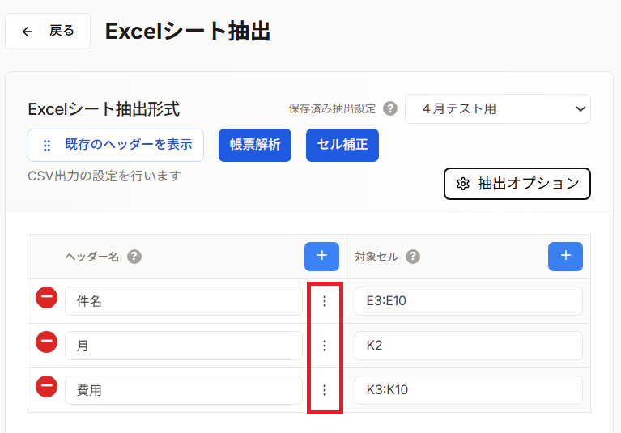

抽出オプション（項目ごと）では、CSVの各列（項目）に対して個別に設定を行います。データフォーマット指定、必須チェック、桁数チェックなど、列ごとに異なる処理を定義できます。

各項目に対して任意の名前を設定できます。この名前はメモ用であり、実際のCSV出力には影響しません。
各項目に対して説明文を記載できます。データの仕様や注意事項などを記録するのに便利です。
対象セルに始点となる1セルを指定した場合、その項目について、データの終端まで一括で範囲を指定できます。
| 選択肢 | 説明 | 例 |
|---|---|---|
| 一番下まで | 始点セルから指定行数までデータを抽出 | A2から100行目まで → 「100」と入力 |
| 一番右まで | 始点セルから指定列までデータを抽出 | A1からZ列まで → 「Z」と入力 |
対象セルに指定した1つの値を、全ての行に対してコピーして出力します。
元のExcelデータ（対象セル: A2）:
A B
1 区分 金額
2 売上 1000
3 2000
4 3000
ONにした場合の出力:
A B 売上 1000 売上 2000 売上 3000
セルの表示形式を無視して、セルに入力されている生データ（元の値）を抽出します。
| Excelの表示 | 実際の値 | OFF時の出力 | ON時の出力 |
|---|---|---|---|
| ¥1,000 | 1000 | ¥1,000 | 1000 |
| 2024/01/15 | 45306 | 2024/01/15 | 45306 |
| 100% | 1 | 100% | 1 |
「入力値を抽出する」がONの場合のみ設定できます。Excelのシリアル値として取得した日付を、指定したフォーマットに変換します。
| フォーマット | 出力例 | 説明 |
|---|---|---|
| 指定無し | 45306 | シリアル値のまま出力 |
| yyyy/mm/dd | 2024/01/15 | 年/月/日 |
| yyyy/mm/dd hh:mm:ss | 2024/01/15 14:30:00 | 年/月/日 時:分:秒 |
この項目に値が入力されているかをCSV出力時にチェックします。値が欠損している行がある場合、エラーを表示してダウンロードを中止します。
CSV出力（ダウンロード）ボタンをクリックした時に、バックエンドで自動的にチェックされます。
以下のいずれかに該当するセルは「空白」として扱われます：
【必須チェックエラー】「項目名」の○行目に値がありません。
データの桁数（文字数）をチェックします。最小桁数・最大桁数のどちらか、または両方を設定できます。
必須チェックと同様に、CSV出力（ダウンロード）ボタンをクリックした時にチェックされます。
【桁数チェックエラー】「項目名」の○行目が桁数範囲外です。（最小○桁/最大○桁）
| 項目 | 最小桁数 | 最大桁数 | 説明 |
|---|---|---|---|
| 郵便番号 | 7 | 7 | 必ず7桁 |
| 電話番号 | 10 | 11 | 10桁または11桁 |
| 商品コード | 8 | 未設定 | 最低8桁以上 |
| メモ | 未設定 | 100 | 100桁以内 |
設定ダイアログで行った変更は、「適用」ボタンをクリックすることで保存されます。保存した設定は、CSV出力パターンとして登録でき、次回以降も再利用できます。
| 項目名 | 設定内容 |
|---|---|
| 顧客コード |
• ヘッダー名: 「顧客コード（8桁）」 • 必須チェック: ON • 桁数チェック: 最小8、最大8 |
| 登録日 |
• 入力値を抽出: ON • 日時フォーマット: %Y-%m-%d • 必須チェック: ON |
| 電話番号 | • 桁数チェック: 最小10、最大11 |
| 項目名 | 設定内容 |
|---|---|
| 売上日 |
• 入力値を抽出: ON • 日時フォーマット: %Y/%m/%d • 必須チェック: ON |
| 金額 |
• 入力値を抽出: ON（書式なしの数値取得） • 必須チェック: ON |
| 支店コード | • 単セルの値を全行に入力: ON（固定値として出力） |